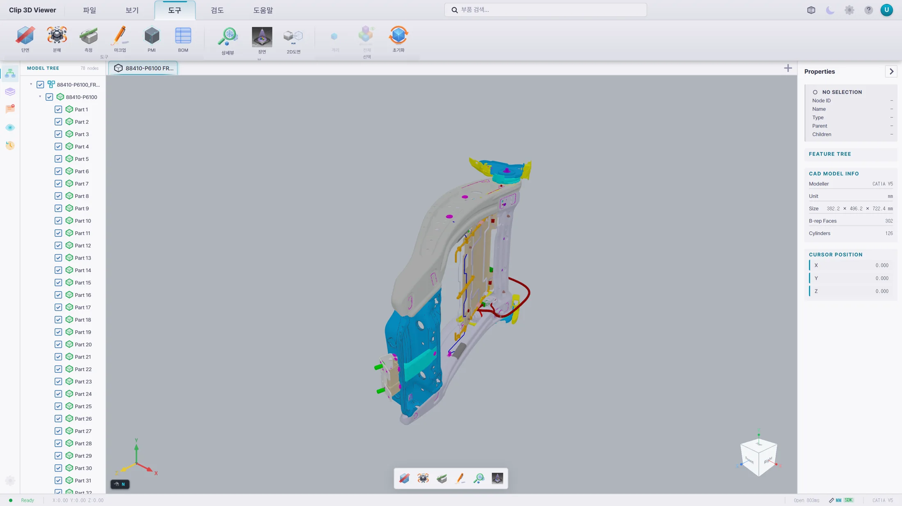

수치로 확인하고 CSV로 남기기
거리·축별 길이·각도·반경·면적·체적·무게중심과 면·부품 간 거리를 검토합니다. 결과는 Excel 호환 CSV로 내려받습니다. 정밀도는 변환 데이터 기준으로 확인합니다.
 CLIP 3D Viewer
CLIP 3D Viewer
CLIP 3D Viewer는 주요 CAD 데이터를 웹에서 검토하는 팹스넷의 3D 뷰어입니다. 브라우저에서 측정·단면·분해·마크업과 모델 비교를 수행합니다. PLM 화면 안에서의 활용과 제품 데이터 연계는 고객 환경에 맞춰 구성합니다.

제공받은 CLIP 3D Viewer 화면을 기능별로 구성했습니다. 항목을 선택하면 실제 제품 화면과 검토 목적이 함께 바뀝니다.
01 / 12
모델의 곡면과 경계를 강조해 복잡한 형상을 빠르게 검토합니다.
거리·축별 길이·각도·반경·면적·체적·무게중심과 면·부품 간 거리를 검토합니다. 결과는 Excel 호환 CSV로 내려받습니다. 정밀도는 변환 데이터 기준으로 확인합니다.
축 기준 또는 선택 면 기준 단면을 이동·반전하고, 선형·방사형·구형 분해를 조절합니다. 내부 형상과 각 부품의 위치를 검토합니다.
펜·화살표·원·사각형·텍스트와 색상·선 굵기를 선택합니다. 주석 목록에서 검토 표시를 확인하고 삭제하거나 되돌립니다.
같은 모델 또는 다른 모델을 두 화면으로 엽니다. 시점을 함께 움직이거나 각 화면을 독립적으로 조작해 눈으로 차이를 검토합니다.
계층별 부품 탐색, 숨기기·단독 표시·선택 반전과 초점 이동을 지원합니다. 색상·투명도와 재질 밀도를 조절해 검토 대상을 구분합니다.
자체 웹뷰어를 PDM·PLM 업무에 적용할 위치를 함께 설계합니다. 품목·BOM 연결, 사용자 인증과 외부 공유는 도입 범위를 정해 구성합니다.
아래는 대표 검토 대상 형식입니다. 제품 버전·모델 구성·도입 구성 및 라이선스에 따라 열람 범위가 달라집니다.
CATIA · SolidWorks · NX/Creo · Inventor.catpart / .catproduct · .sldprt / .sldasm · .prt / .asm · .ipt / .iam
STEP · IGES · JT · Parasolid · ACIS.step / .stp · .iges / .igs · .jt · .x_t / .x_b · .sat / .sab
STL · OBJ · FBX · glTF / GLB · IFC형식에 따라 제품 구조·속성·측정에 사용할 수 있는 정보가 다릅니다. 단품과 어셈블리 샘플로 확인합니다.
자주 사용하는 CAD와 버전, 최대 모델 크기, 필요한 측정·검토 항목을 알려주세요. 형상과 속성, 처리 시간과 정밀도를 실제 샘플로 검토합니다.
측정, 단면, 분해를 이용해 형상과 조립 관계를 검토합니다.
MEASURE · SECTION · EXPLODE도면과 형상 속성을 함께 보며 검사 대상과 검토 위치를 확인합니다.
DRAWING · PROPERTY · MARKUP별도 CAD 환경이 없는 사용자도 브라우저에서 동일한 검토 화면을 공유합니다.
WEB ACCESS · REVIEW CONTEXT모델 트리에서 선택 부품을 찾고 필요한 구조만 표시합니다. 품목·BOM·문서 연결은 연계 범위를 정해 구성합니다.
MODEL TREE · BOM · PLM형상 확인부터 측정·단면 검토, 의견 공유까지 한 화면에서 이어갑니다. 귀사의 모델로 필요한 검토 결과를 확인하고, 제품 데이터와 연결할 업무 범위를 상담하세요.
제품 구조와 형상을 함께 살펴 검토 대상 파악
측정·단면·분해로 확인할 부분을 명확하게
마크업으로 위치와 의견을 함께 전달
BOM·문서·검토 이력의 연계 범위 협의
지원 형식·라이선스·보안 요구와 업무 연계 범위는 고객사의 기존 환경과 계약 조건에 따라 달라집니다. 실제 모델과 검토 목적을 기준으로 도입 전에 확인합니다.
01CURRENT PRODUCT
02PROJECT DEFINITION
브라우저 기반 검토를 회사의 PDM·PLM 업무 안에서 활용하고 싶다면, 웹뷰어 구성과 연계 범위를 상담하세요.
웹뷰어·시스템 연계 상담 ↗SpinFire Insight 제품 도입을 검토 중이라면 사용 CAD와 검토 업무를 기준으로 제품 데모와 라이선스를 안내합니다.
SpinFire Insight 소개 보기 ↗CLIP 3D Viewer / FIT CHECK귀사의 CAD 형식과 검토 업무에
맞는 도입 범위를 함께 정리합니다.